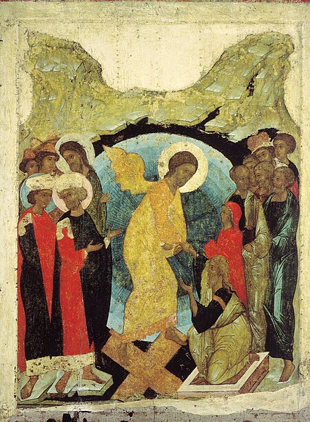

აღდგომა
აღვსება
ქართულ მართლმადიდებლურ საეკლესიო ლიტერატურაში აღდგომის დღესასწაულის აღსანიშნავად გამოიყენება ტერმინი „აღვსება“. იგი ორიგინალური ძველი ქართული ტერმინია და, უპირატესად, პასქალიონში გამოიყენება. სიტყვა აღვსება ებრაულიდან მომდინარე ტერმინ პასექის ზედმიწევნითი შესატყვისია და ბერძნულ პასხას და სომხურ ზატიკს შეესაბამება. „უძველეს იადგარში“ აღვსება აღდგომის საგალობლებში გვხვდება, რაც კიდევ ერთხელ მოწმობს, მისი როგორც ტერმინის სიძველეს.